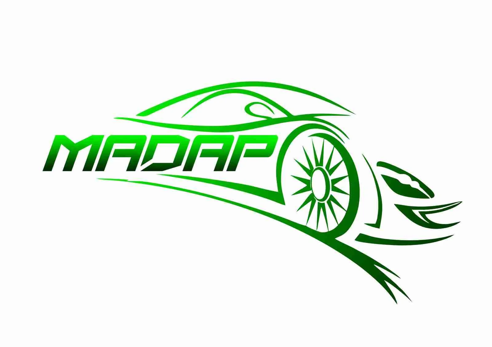

Projeto Profissional · Em desenvolvimentoProfessional Project · In development
MADAP Auto Parts & Rentals
Plataforma web em desenvolvimento para uma empresa do setor automóvel no Luxemburgo, concebida para integrar catálogo e venda de peças automóveis, aluguer de veículos e ferramentas de gestão interna.Web platform currently in development for an automotive company in Luxembourg, designed to combine an automotive parts catalogue and online sales, vehicle rentals and internal management tools.

- TipoType
- Projeto ProfissionalProfessional Project
- LocalizaçãoLocation
- LuxemburgoLuxembourg
- EstadoStatus
- Em desenvolvimentoIn development
- TecnologiasTechnologies
- F# · Fable · React · Vite · Giraffe · PostgreSQL · Supabase
01Visão GeralOverview
Plataforma web para uma empresa do setor automóvel no Luxemburgo, a MADAP. O objetivo é reunir num único sistema o catálogo e a venda de peças automóveis, o aluguer de veículos e as ferramentas de gestão interna da empresa.
Web platform for MADAP, an automotive company in Luxembourg. The goal is to bring together in a single system the automotive parts catalogue and online sales, vehicle rentals and the company's internal management tools.
02Objetivos do ProjetoProject Goals
- Aplicação web multi-idioma
- Catálogo de produtos e venda de peças automóveis
- Aluguer de veículos
- Área administrativa e gestão de encomendas
- Ferramentas de gestão interna
- Multilingual web application
- Product catalogue and automotive parts sales
- Vehicle rentals
- Administration area and order management
- Internal management tools
03ArquiteturaArchitecture
Aplicação web integrada com uma infraestrutura backend baseada em API e PostgreSQL, com o Supabase como camada de base de dados.
Web application integrated with an API based backend infrastructure and PostgreSQL, with Supabase as the database layer.
04Stack TecnológicaTechnology Stack
- F# com Fable · frontend compilado para React
- React + Vite
- Giraffe · API backend
- PostgreSQL · Supabase
- F# with Fable · frontend compiled to React
- React + Vite
- Giraffe · backend API
- PostgreSQL · Supabase
05Estado AtualCurrent Development Status
O projeto encontra-se em desenvolvimento ativo e ainda não está publicado. O website atualmente online da MADAP não foi desenvolvido por mim; a nova plataforma aqui descrita substituirá essa presença quando for lançada.
The project is under active development and is not yet published. MADAP's current live website was not developed by me; the new platform described here will replace that presence once launched.
Projeto atualmente em desenvolvimento.Project currently in development.